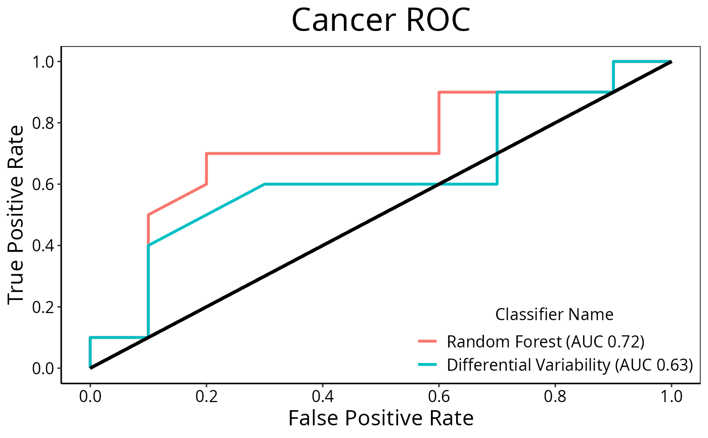

Plot Receiver Operating Curve Graphs for Classification Results
ROCplot.RdCreates one ROC plot or multiple ROC plots for a list of ClassifyResult objects. One plot is created if the data set has two classes and multiple plots are created if the data set has three or more classes.
Usage
# S4 method for class 'ClassifyResult'
ROCplot(results, ...)
# S4 method for class 'list'
ROCplot(
results,
mode = c("merge", "average"),
interval = 95,
comparison = "auto",
lineColours = "auto",
lineWidth = 1,
fontSizes = c(24, 16, 12, 12, 12),
labelPositions = seq(0, 1, 0.2),
plotTitle = "ROC",
legendTitle = NULL,
xLabel = "False Positive Rate",
yLabel = "True Positive Rate",
showAUC = TRUE
)Arguments
- results
A list of
ClassifyResultobjects.- ...
Parameters not used by the
ClassifyResultmethod but passed to thelistmethod.- mode
Default:
"merge". Whether to merge all predictions of all iterations of cross-validation into one set or keep them separate. Keeping them separate will cause separate ROC curves to be computed for each iteration and confidence intervals to be drawn with the solid line being the averaged ROC curve.- interval
Default: 95 (percent). The percent confidence interval to draw around the averaged ROC curve, if mode is
"each".- comparison
Default:
"auto". The aspect of the experimental design to compare. Can be any characteristic that all results share. If the data set has two classes, then the slot name with factor levels to be used for colouring the lines. Otherwise, it specifies the variable used for plot facetting.- lineColours
Default:
"auto". A vector of colours for different levels of the comparison parameter, or if there are three or more classes, the classes. If"auto", a default colour palette is automatically generated.- lineWidth
A single number controlling the thickness of lines drawn.
- fontSizes
A vector of length 5. The first number is the size of the title. The second number is the size of the axes titles and AUC text, if it is not part of the legend. The third number is the size of the axes values. The fourth number is the size of the legends' titles. The fifth number is the font size of the legend labels.
- labelPositions
Default: 0.0, 0.2, 0.4, 0.6, 0.8, 1.0. Locations where to put labels on the x and y axes.
- plotTitle
An overall title for the plot.
- legendTitle
A default name is used if the value is
NULL. Otherwise a character name can be provided.- xLabel
Label to be used for the x-axis of false positive rate.
- yLabel
Label to be used for the y-axis of true positive rate.
- showAUC
Logical. If
TRUE, the AUC value of each result is added to its legend text.
Details
The scores stored in the results should be higher if the sample is more likely to be from the class which the score is associated with. The score for each class must be in a column which has a column name equal to the class name.
For cross-validated classification, all predictions from all iterations are considered simultaneously, to calculate one curve per classification.
Examples
predicted <- do.call(rbind, list(DataFrame(data.frame(sample = LETTERS[seq(1, 20, 2)],
Healthy = c(0.89, 0.68, 0.53, 0.76, 0.13, 0.20, 0.60, 0.25, 0.10, 0.30),
Cancer = c(0.11, 0.32, 0.47, 0.24, 0.87, 0.80, 0.40, 0.75, 0.90, 0.70),
fold = 1)),
DataFrame(sample = LETTERS[seq(2, 20, 2)],
Healthy = c(0.45, 0.56, 0.33, 0.56, 0.65, 0.33, 0.20, 0.60, 0.40, 0.80),
Cancer = c(0.55, 0.44, 0.67, 0.44, 0.35, 0.67, 0.80, 0.40, 0.60, 0.20),
fold = 2)))
actual <- factor(c(rep("Healthy", 10), rep("Cancer", 10)), levels = c("Healthy", "Cancer"))
result1 <- ClassifyResult(DataFrame(characteristic = c("Data Set", "Selection Name", "Classifier Name", "Cross-validation"),
value = c("Melanoma", "t-test", "Random Forest", "2-fold")),
LETTERS[1:20], paste("Gene", LETTERS[1:10]), list(paste("Gene", LETTERS[1:10]), paste("Gene", LETTERS[c(5:1, 6:10)])),
list(paste("Gene", LETTERS[1:3]), paste("Gene", LETTERS[1:5])),
list(function(oracle){}), NULL, predicted, actual)
predicted[c(2, 6), "Healthy"] <- c(0.40, 0.60)
predicted[c(2, 6), "Cancer"] <- c(0.60, 0.40)
result2 <- ClassifyResult(DataFrame(characteristic = c("Data Set", "Selection Name", "Classifier Name", "Cross-validation"),
value = c("Melanoma", "Bartlett Test", "Differential Variability", "2-fold")),
LETTERS[1:20], paste("Gene", LETTERS[1:10]), list(paste("Gene", LETTERS[1:10]), paste("Gene", LETTERS[c(5:1, 6:10)])),
list(paste("Gene", LETTERS[1:3]), paste("Gene", LETTERS[1:5])),
list(function(oracle){}), NULL, predicted, actual)
ROCplot(list(result1, result2), plotTitle = "Cancer ROC")
